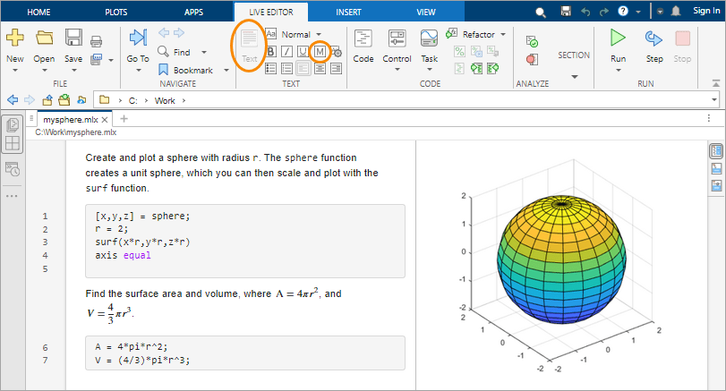

Programming and Scripts
The simplest type of MATLAB® program is called a script. A script is a file that contains multiple sequential lines of MATLAB commands and function calls. You can run a script by typing its name at the command line.
Scripts
To create a script, use the edit command,
edit mysphereThis command opens a blank file named mysphere.m. Enter some
code that creates a unit sphere, doubles the radius, and plots the results:
[x,y,z] = sphere;
r = 2;
surf(x*r,y*r,z*r)
axis equal
Next, add code that calculates the surface area and volume of a sphere:
A = 4*pi*r^2; V = (4/3)*pi*r^3;
Whenever you write code, it is a good practice to add comments that describe the
code. Comments enable others to understand your code and can refresh your memory
when you return to it later. Add comments using the percent (%)
symbol.
% Create and plot a sphere with radius r. [x,y,z] = sphere; % Create a unit sphere. r = 2; surf(x*r,y*r,z*r) % Adjust each dimension and plot. axis equal % Use the same scale for each axis. % Find the surface area and volume. A = 4*pi*r^2; V = (4/3)*pi*r^3;
Save the file in the current folder. To run the script, type its name at the command line:
mysphere
You can also run scripts from the Editor using the Run
button,  .
.
Live Scripts
Instead of writing code and comments in plain text, you can use formatting options in live scripts to enhance your code. Live scripts allow you to view and interact with both code and output and can include formatted text, equations, and images.
For example, convert mysphere to a live script by selecting
Save As and changing the file type to a MATLAB Live Code File (*.mlx). Then, replace the code
comments with formatted text. For instance:
Convert the comment lines to text. Select each line that begins with a percent symbol, and then select Text. Remove the percent symbols.
Rewrite the text to replace the comments at the end of code lines. To apply a monospace font to function names in the text, select . To add an equation, select Equation on the Insert tab.

To create a new live script using the edit command, include the
.mlx extension with the file
name:
edit newfile.mlxLoops and Conditional Statements
Within any script, you can define sections of code that either repeat in a loop or
conditionally execute. Loops use a for or
while keyword, and conditional statements use
if or switch.
Loops are useful for creating sequences. For example, create a script named
fibseq that uses a for loop to calculate
the first 100 numbers of the Fibonacci sequence. In this sequence, the first two
numbers are 1, and each subsequent number is the sum of the previous two,
Fn =
Fn-1 +
Fn-2.
N = 100; f(1) = 1; f(2) = 1; for n = 3:N f(n) = f(n-1) + f(n-2); end f(1:10)
When you run the script, the for statement defines a counter
named n that starts at 3. Then, the loop repeatedly assigns to
f(n), incrementing n on each execution
until it reaches 100. The last command in the script, f(1:10),
displays the first 10 elements of
f.
ans =
1 1 2 3 5 8 13 21 34 55
Conditional statements execute only when given expressions are true. For example,
assign a value to a variable depending on the size of a random number:
'low', 'medium', or
'high'. In this case, the random number is an integer between
1 and
100.
num = randi(100) if num < 34 sz = 'low' elseif num < 67 sz = 'medium' else sz = 'high' end
The statement sz = 'high' only executes when
num is greater than or equal to 67.
Script Locations
MATLAB looks for scripts and other files in certain places. To run a script, the file must be in the current folder or in a folder on the search path.
By default, the MATLAB folder that the MATLAB Installer creates is on the search path. If you want to store and run
programs in another folder, add it to the search path. Select the folder in the
Files panel, right-click, and then select Add to Path.